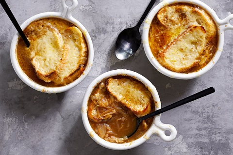

Onion soup

Description
Better than Onion soup. Make the entire quantity and place in freezer in heavy duty freezer bags.
When vidalias are in season, I double and triple the recipe to have the soup on hand.
Ingridients
- 3 tablespoons unsalted butter
- 3 to 4 large red or yellow onions (about 3 pounds), peeled and thinly sliced
- ¾ teaspoon kosher salt, more to taste
- 2 quarts (8 cups) beef stock
- 1 cup dry white wine
- 1 tablespoon dry sherry
- 1 tablespoon all-purpose flour
- ½ teaspoon black pepper, more to taste
- French bread cut into 8 to 12 1/2-inch slices
- 1 ½ cups grated Gruyère cheese
Steps
- Melt butter in a heavy Dutch oven over medium heat. Add onions and 1/2 teaspoon salt, stir and cover, letting onions soften for 5 minutes. Remove lid and let onions caramelize until golden brown over medium heat, stirring occasionally. Adjust heat if onions are browning too quickly. The caramelization process may take 45 to 60 minutes.
- Meanwhile, warm broth in a saucepan over low heat.
- Once onions are caramelized, add wine and sherry to the pot and allow mixture to come to boil. Stir in flour and let thicken for a minute or two.
- Slowly add warm broth, 1/4 teaspoon salt and the pepper to the onion mixture and boil uncovered for 10 minutes. Add more salt and pepper to taste.
- Heat the broiler, and arrange individual ovenproof casseroles on a baking sheet. Ladle soup into casseroles, and cover top with bread slices. Sprinkle each casserole generously with Gruyère. Broil for a minute or two, watching carefully, until cheese melts and browns. Serve immediately.